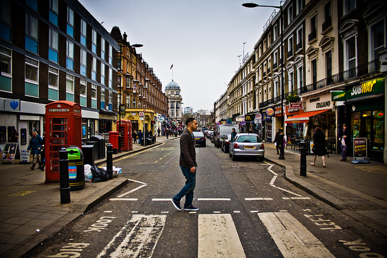

The Critique of Everyday Life
Myths in Eeveryday Life
On Vulgarity
Lefebvre, Henri
Norm and Form
The role of Graphic Design in the Public Domain
Hughes C. Boekraad
The Practice of Everyday (Media) Life
From Mass Consumption to Mass Cultural Production?
Lev Manovich
Teens and Social Media
The use of social media gains a greater foothold in teen life
Amanda Lenhart et al.
Social Media: Paradigm Shift
Adrian Chan
The Long Tail
Chris Anderson
The deepest troubles of the planet today do not lie only with geopolitical conflicts
and world-economic ravages.They are also brewing in the metropolitan centers, as
we saw most recently and clearly in the “French” suburban uprising of fall 2005,
led by not quite so post-colonial subjects.Yet what happened in France in this case
remains to be properly understood, especially by students of politics engaged with
critical theory. After all, a few radical exponents of the latter joined the struggles
against the conditions that spectacularly engulfed les banlieues in flames, placing them
on a spatio-temporal axis aligned with the events of 1848, 1871, and 1968: Alain
Badiou advocating for sans-papiers, Pierre Bourdieu denouncing neoliberalism, and
Étienne Balibar arguing for the “right to the city” against neo-racism.1 Even Jacques
Derrida’s post-9/11 book Rogues2 may be extended with a little imagination to touch
on the formidable forces bearing down on the predominantly North and Black
Africans now living in the formerly “red” rings of French working-class suburbs,
while being subjected to the worst deprivations registered in vivid detail by
Bourdieu and his colleagues.3 But an adequate account of les banlieues should exceed
the work of any one of these critical thinkers. It demands a historical perspective
capable of articulating spatial forms with social relations at various levels of our new
global reality—from the quotidian, through the urban, to the global. Moving
through these levels of analysis to make sense of rebellious actions, and their
mediation by emerging relations between cities and world order, now requires a
critique sharply focused on three key terms:space, difference, and everyday life.
Henri Lefebvre springs to our minds when we think of these terms with necessary
reference to each other as well as the world in which we live, given how he
elaborated them in a remarkably supple oeuvre of idiosyncratic marxist thought
intent on the revolutionary transformation of his own times and spaces. Of course,
his work will have to be considerably adapted—globalized, even—to do justice to
the transnational realities of contemporary metropolitan life, in France as much as
elsewhere. For Lefebvre lived the adventure of the twentieth century, not the twentyfirst,
to play with the title of Rémi Hess’s biography.4 He wrote over sixty books
and numerous other publications, covering an astonishingly wide range of subjects,
including philosophy, political theory, sociology, literature, music, linguistics, and
urban studies, in formats that vary from popular tomes on marxism to difficult,
meandering writings that escape conventional academic protocols. Having helped
introduce Hegel and Marx’s early work into French debates, he developed his
original heterodox marxism through a series of critical engagements with French
phenomenology, existentialism, structuralism, and the surrealist, dadaist, and
situationist avant-gardes. His most striking contributions include a critique of everyday
life and studies of urbanization, space, and state—alongside studies of various
prominent strands of French left intellectual discourse and a series of conjunctural
meditations on such vital political moments as May 1968. Lefebvre was also a
lifelong proponent of left-communist politics. Following his stint as an active
member of the French Communist Party (PCF) from 1928 to his expulsion in 1958,
he became an important exponent of the new left, contributing seminally to debates
on self-management (autogestion). In addition, he directed research at the Centre
National de la Recherche Scientifique (CNRS) (1949–61) and enjoyed a career as
a charismatic university professor in Strasbourg (1961–5), where he collaborated
with situationists, and Nanterre (1965–73), the hotbed of the 1968 student
rebellion.
To contextualize Lefebvre’s reception, here we want to look at how certain AngloAmerican
academic circles have influentially “produced” Lefebvre, as it were.
Although Lefebvre receives passing mention in various anthologies of Western
Marxism, his influence in the field of critical theory broadly understood pales in
comparison to the considerable attention still commanded by, say,Theodor Adorno
and Louis Althusser. But matters are different in some fields of academic inquiry with
which we have working relationships, ranging from architecture through urban
studies to radical geography, where Lefebvre enjoys some celebrity status. Spirited
but limited work in these fields, however, is beginning to make its mark in critical
theory at large, especially with help from the recent publication of two quite
different studies of Lefebvre by Stuart Elden and Andy Merrifield.5
2 kipfer, goonewardena, schmid, milgrom
Briefly, such is the backdrop against which we hope to lay here the interpretative
ground for a “third” constellation of Lefebvre readings, one different from the two
major interpretations of his work that have invariably dominated the last three
decades of English-speaking “space” debates: the “postmodern” appropriations led
by Edward Soja that followed the “urban political-economic” renderings centered
on David Harvey. Hardly any contribution to the present volume can be adequately
captured by these two avowedly spatial lines of interpretation. We contend that
Lefebvre’s own view of the terms “space,” “difference,” and “everyday life” was
significantly different from, if not altogether incompatible with, the particular uses
of these terms in those two readings. As such, the Lefebvre that has been typically
available for consumption in the Anglo-American academy amounted to a significant
abstraction from Lefebvre’s self-understanding of his own interventions in
revolutionary theory and practice, suitably packaged for the postmodern Zeitgeist.
With the waning fortunes of the latter,6 however, subjective and objective conditions
are now at hand for more fruitful examinations of Lefebvre.
The “third” wave of Lefebvre readings we propose links urban-spatial debates
more persistently and substantively with an open-minded appropriation of his
metaphilosophical epistemology shaped by continental philosophy and Western
Marxism. In so doing, it also rejects the debilitating dualism between “political
economy” and “cultural studies” that in effect marked the distinction between the
“first” and “second” waves of Lefebvre studies, making it impossible for us to return
to a simply updated or expanded earlier school of thought on Lefebvre. Indeed,
one of the legacies of the debates within and on “post” theory of the 1980s and early
1990s was an often acute bifurcation of theoretical debate that identifies marxism
with studies of material social relations, class, and political economy while relegating
considerations of subjectivity, identity, difference, and culture to poststructuralist
versions of cultural studies.7
Certainly, this bifurcation of theory profoundly influenced how key intellectuals—Walter
Benjamin, Antonio Gramsci, Frantz Fanon, and others—were
received within contemporary academic debates.This volume joins interpretive
efforts on these authors by those who attempt to overcome the divide between
culturalism and economism in a substantive way.We have in mind interpreters who
have reignited supposedly “postmodern” problems—difference, identity, language,
body, and the like—in “outdated” if not forgotten materialist, dialectical, and marxist
theoretical contexts, instead of joining theoretically disparate and politically distinct
strands of cultural studies and political economy.8 What emerges from such a
reinscription in Lefebvre’s case is a heterodox and open-ended historical materialism
that is committed to an embodied, passionately engaged, and politically charged
form of critical knowledge.Within this context, his writings about everyday life and
the city are not to be understood simply as sociological extensions of his oeuvre
attractive only to specialists of “space”: urban sociologists, geographers, planners,
on the production of henri lefebvre 3
and architects. For it was precisely through his concrete contributions to these fields
that Lefebvre worked out his overall political and theoretical orientation. In that
sense, we hope to demonstrate that Lefebvre’s urban and spatial writings are of more
general interest for radical social and political theory. In turn, we intend to show that
his adventures in French Marxism shed much-needed light on his pioneering work
on space, difference, and everyday life.